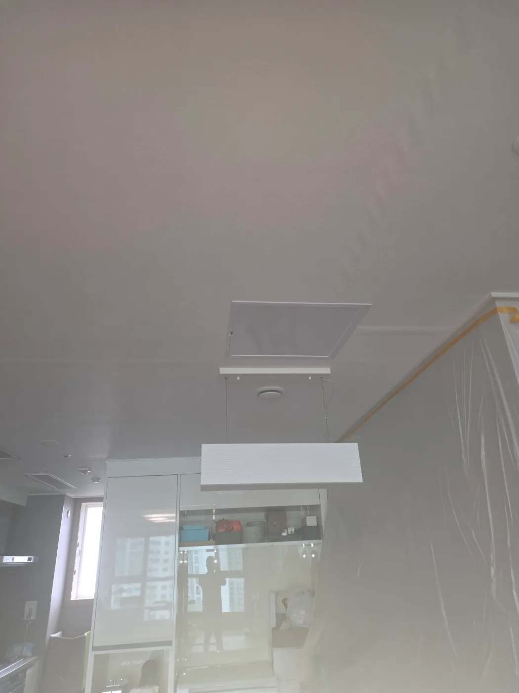

강남구 대치동 배관공사, 현장 도착 후 진단
시스템에어컨 드레인관의 배수가 원활하지 않다는 요청을 접수한 뒤 필요한 장비를 준비해 강남구 대치동 현장으로 신속하게 출동했습니다. 숙련된 기술자가 시스템에어컨과 천장 내부 드레인배관의 연결 구조부터 점검했습니다.
시스템에어컨 드레인관은 냉방 운전 중 발생하는 응축수를 외부 배수구까지 보내는 역할을 합니다. 이 배관이 막히면 응축수가 빠져나가지 못하기 때문에 막힌 위치를 정확하게 찾고 내부 이물질을 제거해야 합니다.
이번 대치동 현장은 드레인관이 천장 내부에 매립되어 있어 외부에서 바로 접근하기 어려웠습니다. 무작정 천장을 넓게 개방하지 않고 배관의 진행 방향과 막힌 구간을 확인해 작업이 필요한 위치를 선정했습니다.
1단계: 증상 확인과 필요한 장비 작업
천장 내부의 시스템에어컨 드레인관 위치를 확인한 뒤 작업 공간 주변을 보양했습니다. 실내 작업인 만큼 먼지와 오염물이 주변 가구와 벽면에 묻지 않도록 비닐 보양을 꼼꼼하게 진행했습니다.
막힌 구간에 접근할 수 있는 위치를 정한 후 천장을 필요한 범위만 가공해 점검구를 만들었습니다. 이어서 천장 내부의 드레인배관을 확인하고 석션 장비를 연결할 수 있도록 해당 배관을 절단했습니다.
천장 내부 배관 작업은 막힘만 제거하는 기술뿐 아니라 배관 위치를 정확하게 파악하고, 불필요한 천장 손상을 줄이면서 안전하게 작업 공간을 만드는 경험이 중요합니다.

2단계: 원인 구간 처리와 정상 작동 확인
절단한 시스템에어컨 드레인관에 전문 석션 장비를 연결해 배관 내부의 막힘 구간을 집중적으로 작업했습니다. 강한 흡입력을 이용해 드레인관 안쪽에서 배수 흐름을 차단하고 있던 이물질을 제거하고 물길을 확보했습니다.
석션 작업을 마친 뒤에는 드레인관으로 물을 흘려보내는 통수검사를 진행했습니다. 응축수가 지나가는 경로를 따라 물이 정체되지 않고 원활하게 배출되는 것을 확인한 후 절단했던 배관을 다시 복구했습니다.
마지막으로 추후에도 드레인관 상태를 점검하거나 관리할 수 있도록 천장 개구부에 점검구를 설치했습니다. 주변 천장과 어울리도록 수평과 마감 상태를 확인해 깔끔하게 작업을 마무리했습니다.

작업 결과와 재발 방지 안내
강남구 대치동 시스템에어컨 드레인관의 막힌 구간을 석션 작업으로 제거하면서 응축수 배출이 정상적으로 회복됐습니다. 천장을 무분별하게 철거하지 않고 정확한 위치에 점검구를 만든 뒤 배관 절단, 석션, 통수검사, 배관 복구와 마감까지 한 번에 진행한 현장입니다.
시스템에어컨 드레인관은 사용하면서 내부에 먼지와 각종 오염물이 쌓일 수 있습니다. 냉방 사용 전에 배수 상태를 점검하고, 배출이 느려지거나 이상 증상이 나타난다면 천장과 실내에 추가 피해가 발생하기 전에 전문적인 진단을 받는 것이 좋습니다.
신라건축설비는 강남구 대치동을 비롯한 서울 전 지역과 경기권에 신속하게 출동합니다. 변기막힘·싱크대막힘·하수구막힘과 같은 생활 배관 문제를 전문적으로 해결하며, 천장 내부 드레인관과 공용배관처럼 접근이 어려운 고난도 배관막힘도 현장 구조에 맞춰 진단합니다.
석션·관통·배관 내시경·샤프트·고압세척뿐 아니라 천장 개방, 점검구 설치, 배관 절단·보수·교체 및 대형 배관공사까지 자체적으로 대응할 수 있습니다. 여러 업체를 따로 부르지 않고 막힘 진단부터 배관 작업과 마감까지 한 번에 처리하는 것이 신라건축설비의 강점입니다.
최종 조치: 천장 내부의 시스템에어컨 드레인관 위치와 막힌 구간을 찾아 점검구를 만들었습니다. 작업이 필요한 배관을 절단한 뒤 석션 장비로 내부 막힘을 제거하고 통수검사를 진행했습니다. 배수 상태가 정상적으로 회복된 것을 확인한 후 배관을 복구하고 천장 점검구를 깔끔하게 설치해 마무리했습니다.
현장 방문 전 확인하는 비용과 작업 범위
신라건축설비는 현장 증상과 배관 구조를 확인한 뒤 필요한 작업과 예상 비용을 안내합니다. 단순 관통으로 해결되는지, 배관내시경·석션·고압세척 또는 추가 장비가 필요한지는 현장 상태에 따라 달라집니다. 출장비와 야간 작업비, 추가 장비 비용이 발생할 수 있는 경우 작업 전에 먼저 설명하고 동의를 받은 범위에서 진행합니다.
업체를 선택할 때 확인할 사항
무조건적인 ‘0원’ 표현보다 실제 작업 범위, 추가 비용 조건, 사용 장비와 사후 대응 기준을 확인하는 것이 중요합니다. 해결되지 않았을 때의 비용 기준과 작업 후 동일 증상 발생 시 점검 범위를 사전에 문의해두면 불필요한 분쟁을 줄일 수 있습니다.
강남구 배관공사 자주 묻는 질문
공사 전에 견적을 받을 수 있나요?
천장 내부에 설치된 시스템에어컨 드레인관이 막혀 응축수가 정상적으로 배출되지 않는 상태였습니다. 배관 대부분이 천장 안쪽에 가려져 있어 외부에서는 정확한 막힘 구간과 배관 상태를 확인하기 어려웠습니다.처럼 증상이 나타나더라도 원인은 현장마다 다를 수 있습니다. 장비와 배관 구조를 확인한 뒤 필요한 작업 범위를 안내합니다.
추가 공사가 생기면 바로 진행하나요?
작업 전 증상과 현장 여건을 확인해 예상 범위와 비용을 먼저 안내합니다. 변기 탈거, 장비 추가 투입 또는 공용배관 작업이 필요한 경우 고객 동의 없이 임의로 진행하지 않습니다.
작업 후 A/S는 어떻게 되나요?
완료 후 정상 작동을 함께 확인하고 작업 범위에 따른 사후 안내를 드립니다. 동일 증상이 반복되면 현장 기록을 기준으로 원인을 다시 점검합니다.
배관공사 서울·경기 출동지역
신라건축설비는 강남구 대치동 현장을 포함해 서울 25개 구와 경기도 31개 시·군의 배관 문제를 상담합니다. 현장 거리와 기사 배정 상황에 따라 출동 가능 여부를 먼저 안내드립니다.
서울 전 지역
강남구 · 강동구 · 강북구 · 강서구 · 관악구 · 광진구 · 구로구 · 금천구 · 노원구 · 도봉구 · 동대문구 · 동작구 · 마포구 · 서대문구 · 서초구 · 성동구 · 성북구 · 송파구 · 양천구 · 영등포구 · 용산구 · 은평구 · 종로구 · 중구 · 중랑구
경기도 주요 출동지역
수원시 · 용인시 · 고양시 · 화성시 · 성남시 · 부천시 · 남양주시 · 안산시 · 평택시 · 안양시 · 시흥시 · 파주시 · 김포시 · 의정부시 · 광주시 · 하남시 · 광명시 · 군포시 · 양주시 · 오산시 · 이천시 · 안성시 · 구리시 · 의왕시 · 포천시 · 양평군 · 여주시 · 동두천시 · 과천시 · 가평군 · 연천군